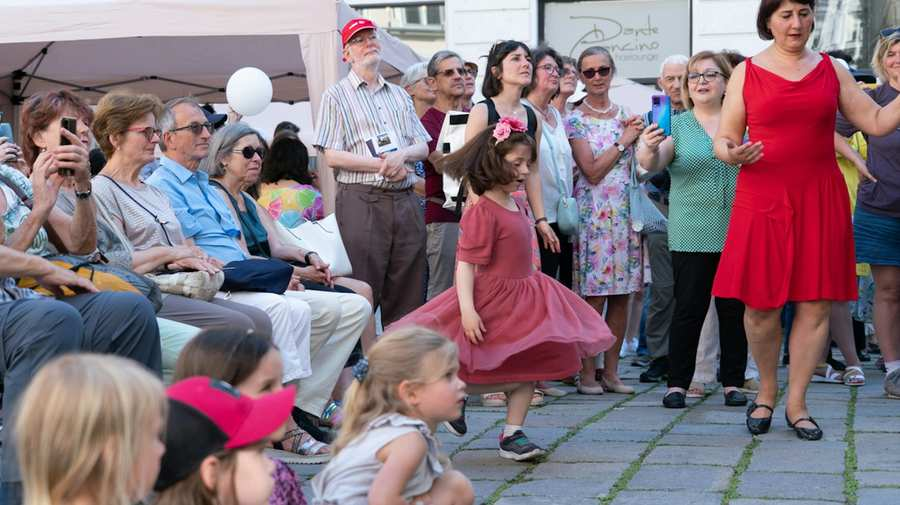
About the Jewish Community of Vienna
About the Jewish Community of Vienna
A vibrant community with a long and eventful history
Schools, synagogues, kosher restaurants and shops, mikveh baths, a diverse cultural life and all manner of work with young people: the small Jewish community in Vienna is now regarded as one of the most dynamic in the German-speaking world. The Israelitische Kultusgemeinde (IKG – Jewish Community) of Vienna has nearly 8000 members, while altogether there are around 12,000 Jews living in Vienna. The caesura of the Shoah is not only apparent at every end and turn in inner-city areas, for example in the form of “Stones of Remembrance”. It also decimated the Jewish population tremendously. At the start of the First Republic after the First World War, there were nearly 200,000 Jews living in Vienna.
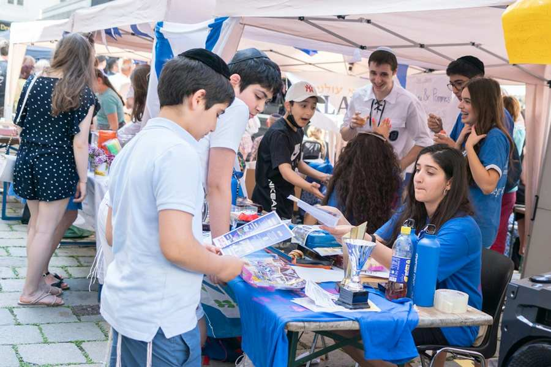
The Shoah was the most significant, but not the only, turning point in the eventful history of Vienna’s Jewish community. The Vienna Gesera in 1421 brought the Jewish community in the Middle Ages to a truly bloody end. The remains of the synagogue on Judenplatz from that era can now be seen at one of the sites belonging to the Jewish Museum Vienna. Any visitor who wishes to trace Jewish life through the centuries will find plenty of ways to do so in Vienna, despite the fact that the Nazis destroyed all the synagogues in 1938 apart from the Vienna City Temple, construction of which began in 1825. Jewish cemeteries – for example in the Seegasse, in Währing, and by Gate 1 of the Vienna Central Cemetery – can be visited and bear sobering witness to those times.
Today, many Jewish institutions – including the IKG campus in the Prater which was built in 2009 and is the home of the Zwi Peres Chajes School, the Maimonides Zentrum retirement home, the IKG’s Psychosocial Centre ESRA and the Hakoah sports club – are located in Leopoldstadt, as they were before 1938. An area there called Unterer Werd was home to the second Jewish community in Vienna, but they too would be expelled, by the Habsburg Emperor Leopold I in 1670. The Leopoldskirche was erected on the site of a former synagogue. Overall, the Catholic Church played a less than glorious role when it came to persecuting Jews, and church leaders have since explicitly distanced themselves from these acts and apologised for them – as can be seen on a plaque on Judenplatz.

It was not until the Enlightenment that normal Jewish life could be re-established in Vienna, when the Edict of Tolerance, issued by Emperor Joseph II, granted civil rights to Jews in 1782. However, it took almost another century before, in 1867 under Emperor Franz Joseph I, Jews were recognised as equal citizens under the Basic Law on the General Rights of Nationals. Then the Jewish community grew very quickly: in 1860, it numbered 6200, but was already up to 40,200 by 1870 and to 147,000 by around 1900.
This was surely in part thanks to the Jewish Act of 1890, which established a legal basis for the relationship between religious associations and the state. The Jewish Act was most recently amended in 2012 to enshrine even more firmly the principle of the “unitary community” which serves as the single point of contact for public authorities but is itself made up of all kinds of different associations and synagogue communities. The unitary community offers the very diverse communities of which it is composed – covering the whole religious spectrum from very orthodox to liberal, from traditional to secular, and also including Ashkenazi and Sephardic groupings – a way of speaking to the outside world with a single voice. Recently, for example, it was instrumental in getting the Austrian-Jewish Cultural Heritage Act that was passed by parliament in 2021 off the ground. This law is regarded as one of the key elements in the National Strategy against Antisemitism proposed by the ruling government coalition of the Austrian People’s Party and the Greens.
People nowadays often refer to the concept of the Jewish-Christian West, yet many non-Jews still regard Judaism as something alien. That is why, under the current IKG President Oskar Deutsch, the community here is making a huge effort to open up. The Open Door Day that is organised each autumn is just a part of that. The Festival of Jewish Culture and the IKG’s annual summer party are also opportunities to get to know the community. Traditionally this is when the Jewish community introduces its institutions and associations, combined with any amount of culture and culinary delights.
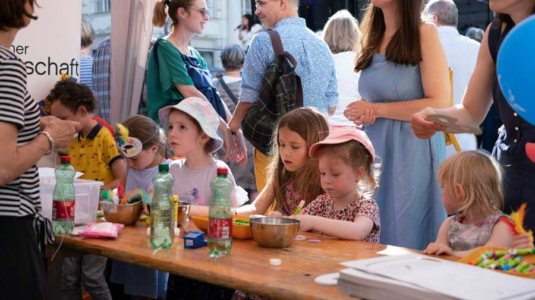
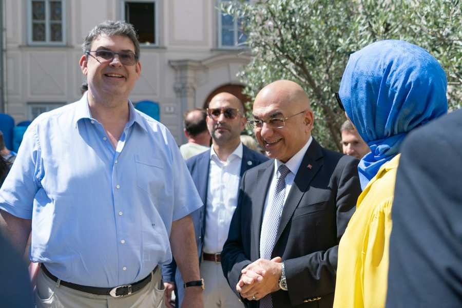
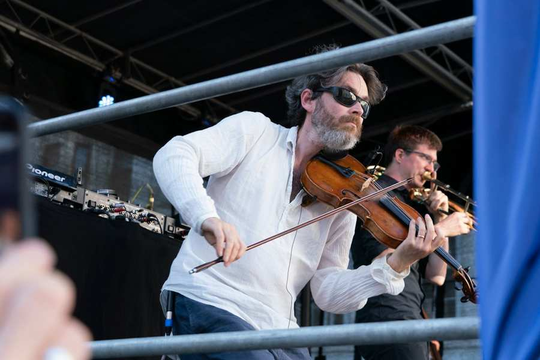
Just how long Jews have been living in eastern Austria was revealed in a sensational find that came to light in 2008 during excavation of an ancient burial ground in Burgenland. Among the finds was a golden amulet engraved in Hebrew with words from the “Shema Israel” prayer (but written in Greek script). It is believed to be the oldest tangible evidence of Jews living in Austria. You will find more information about the history of Vienna’s Jewish community below.
| LEOPOLD EDLER VON WERTHEIMSTEIN | 1853 – 1863 |
| JOSEF RITTER VON WERTHEIMER | 1864 – 1867 |
| JONAS FREIHERR VON KÖNIGSWARTER | 1868 – 1871 |
| Dr. IGNAZ KURANDA | 1872 – 1884 |
| MORITZ RITTER VON BORKENAU | 1884 – 1885 |
| ARMINIO COHN | 1886 – 1890 |
| WILHELM RITTER VON GUTMANN | 1891 – 1892 |
| UNBESETZT | 1893 – 1896 |
| GUSTAV SIMON | 1896 – 1897 |
| KAIS. RATH HEINRICH KLINGER | 1897 – 1903 |
| Dr. ALFRED STERN | 1904 – 1918 |
| Neuwahlen 1920 (zum ersten mal Proportionalwahlrecht) | |
| GENERAL-OBERSTABARZT UNIV.PROF DR. ALOIS PICK | 1920 – 1932 |
| Dr. DESIDER FRIEDMANN (in Auschwitz ermordet) | 1933 – |
| DAVID BRILL | 1946 – 1948 |
| Dr. KURT HEITLER (Sept. 1950 – Mai 1951) | 1950 – 1951 |
| Dr. DAVID SHAPIRA | 1948 – 1952 |
| Dr. EMIL MAURER | 1952 – 1963 |
| Dr. ERNST FELDSBERG | 1963 – 1970 |
| Dr. ANTON PICK (HR) | 1970 – 1981 |
| Dr. IVAN HACKER (HR) | 1982 – 1987 |
| PAUL GROSZ (HR) | 1987 – 1998 |
| Dr. ARIEL MUZICANT | 1998 – 2012 |
| OSKAR DEUTSCH | seit 2012 |
Going back a long way: the history of Vienna’s Jewish community
In the collective consciousness, the history of Jews in Vienna is often associated with particular individuals from the worlds of science and culture: Sigmund Freud, for example, the founder of psychoanalysis, Hans Kelsen, the author of the Austrian constitution, the composers Gustav Mahler and Arnold Schönberg, the writers Arthur Schnitzler, Karl Kraus and Stefan Zweig, the philosophers Ludwig Wittgenstein and Karl Popper or theatre director Max Reinhardt. But Vienna’s Jews were not only people who had an impact on the majority society and made their mark on their time or discipline in new and innovative ways – the Jewish community in Vienna has also always set new standards within Judaism. Salomon Sulzer, for example, when he was the Cantor of the Vienna City Temple in the 19th century, radically reformed synagogue singing and therefore also the liturgy.
Of course, there were Jews living in Austria long before the 19th century. However, the discovery of what is so far the oldest evidence of Jews living in Austria is still very recent: it was in 2008 that researchers at a burial ground in Halbthurn in Burgenland stumbled upon a third-century amulet in a child’s grave. The silver capsule contained a golden scroll inscribed with part of the Shema Israel (“Hear, O Israel! The Lord is our God, the Lord is one”), written in the Hebrew language but in Greek script. At the time, the amulet probably had a protective function, but for us it provides evidence of Jewish people living in our part of the world.
However, we know of people coming into contact with Jews from documents dated even earlier: there are the Raffelstetten Customs Regulations (903-906), which regulated the level and nature of customs duties to be collected, listing not just the goods and where they came from and were to be sold, but also the traders’ ethnicity. And Jews are explicitly mentioned here. Then in 1074 came the first documented mention of Judenburg. In this town in what is now Styria, Jewish merchants played an important role in transalpine trading.
The first Jew to appear in Vienna’s records was called Schlom and in 1194 he was mentioned as Master of Duke Leopold V’s mint. He played an integral role in the history of the city, and even handled the ransom for Richard the Lionheart on behalf of the Duke, but it did him little good: Leopold V later decided to set up a minting association composed of Viennese citizens, where Jews were not allowed to join.
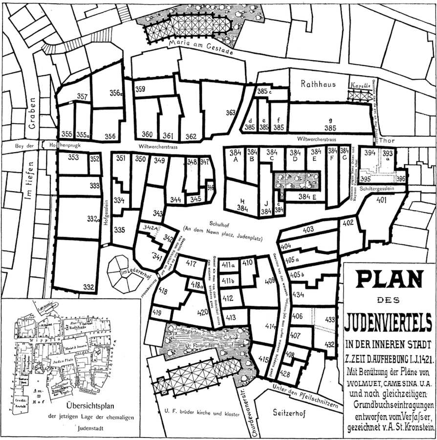
A few years later, Schlom’s life came to an abrupt and unfortunately not unusual end: in his household, he also employed Christian servants and maids. In 1196, one of these servants committed a theft, which Schlom did not simply accept; a court case ensued. The thief’s wife complained about this to some crusaders who happened to be in Vienna. So what happened? The group of crusaders burst into Schlom’s house and killed not just him but altogether 16 Jews. Duke Frederick I, who had by now succeeded Leopold V, had the ringleader executed but pardoned the others.
So even the history of the very first recorded Jew in Vienna mirrors what Jews have experienced time and again during the centuries since: periods of acceptance when they were able to build a life for themselves in the city have been followed by periods of persecution and expulsion. The lowest points have been the Vienna Gesera of 1420/21 which in the Middle Ages brought to an end the Jewish community living in and around what is now called Judenplatz, then the next expulsion of Jews in 1669/70 which ended the Jewish community in Unterer Werd – now Leopoldstadt – and, finally, the Holocaust in the 20th century, such a terrible turning point in the history of humanity.
Vienna’s oldest known synagogue
Schlom owned four plots of land near what is now the Seitenstettengasse and the Desider Friedmann Platz, and he also had a synagogue built, a “scola iudeorum”. It is the oldest synagogue for which we have written evidence of its existence. A few blocks further on, beneath what is now the Judenplatz, you can visit the remains of the mediaeval synagogue: this is one of the two sites of the Jewish Museum Vienna that was founded in 1988. In its new permanent exhibition launched in 2021 called “Our Middle Ages! The first Jewish community in Vienna”, it explored the everyday life of Jews: how they lived, what their occupations were, the kind of hostility to which were they exposed, and the extent to which they interacted socially with non-Jews.
The existence of a Jewish community depended on it being accepted by the ruler at the time. In 1238, Vienna’s Jews were granted a Charter of Privileges by Emperor Frederick II. Under its terms, he put them under his protection as so-called “chamber serfs”. Chamber-serfdom referred to a legal status which meant that, from the 12th century, Jews “belonged” to the Roman-German emperor. Then in 1244 came the “Charter of the Jews” issued by Duke Frederick II. This set out terms for their protection, and also settled legal questions (such as judicial affairs and money-lending). In subsequent centuries there were to be several more such “Charters of the Jews”, for example one in 1376 issued by Albert III and Leopold III (the text of which is no longer in existence), another much later in 1624 under Ferdinand II, regarding the settlement in Unterer Werd, and others under Maria Theresa in 1753 and 1764.
So during the first half of the 13th century, the privileges and “Charter of the Jews” enabled a Jewish community to settle in Vienna. During the 1270s and 1280s, when the royal court relocated to the Hofburg near the Widmertor gate, a Jewish quarter developed around Judenplatz and Wipplinger Strasse. The synagogue that was built here was first mentioned in 1294. The remains of it were only excavated relatively recently – not until 1995/96. It looks as if, before the synagogue was destroyed in 1421, it measured about 20 by 12 metres. The foundations for the bimah, one pillar and most of the floors have been preserved.
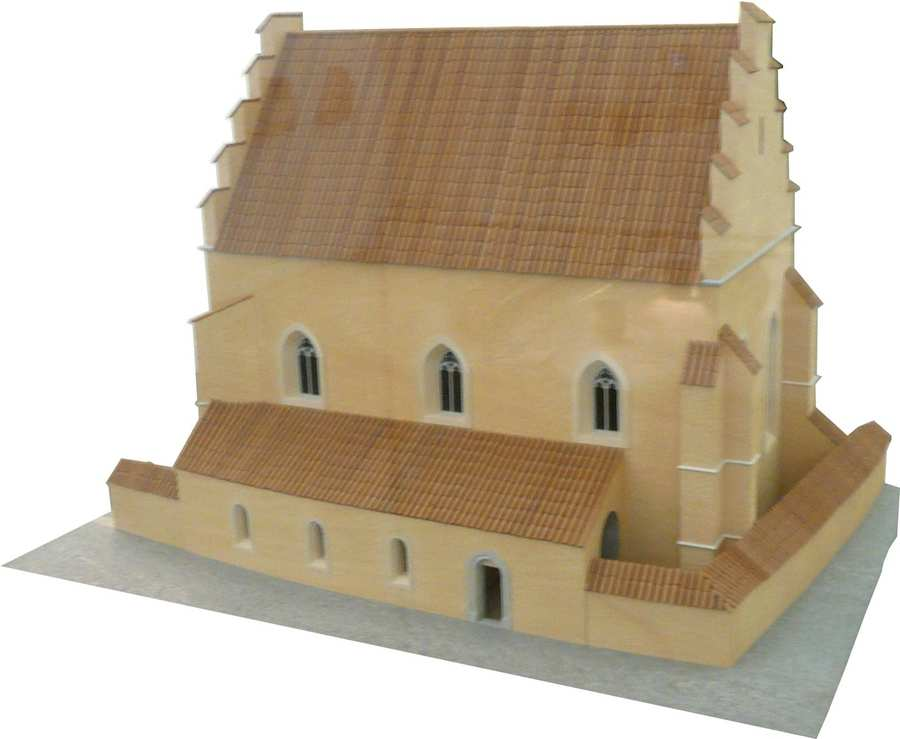
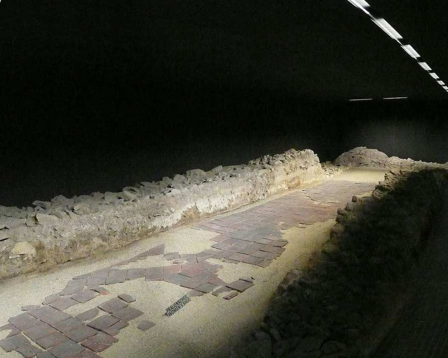
But what happened between 1294 and 1421? There was a thriving Jewish community in Vienna, yes, really thriving. At any rate, in the 14th century it seems to have had an extensive infrastructure: as well as the synagogue, there is also evidence of a hospital, a ritual bath, a butcher’s and a cemetery. However, Jews were not permitted to own land, nor were they allowed to farm, and they were prohibited from practising a number of skilled trades. What they could do was be merchants and money-lenders. Financial business brought them into contact with the nobility on the one hand, and with the vineyard owners around Vienna on the other.
Nevertheless, the co-existence with the Christian majority was by no means frictionless. For example, there is evidence from 1281 that King Rudolf I had a Jew stoned who was accused of having smeared with excrement, or having injured with a stone, a priest who was carrying the holy host. In 1305, there were similar accusations when a farmer stole hosts from St Michael’s Church, but then out of fear threw them into an unfinished jug standing outside the house of a Christian who happened to live next door to a Jewish house. Rudolf III promised to hold the Jews responsible, but did not in fact do so. His promise was enough to protect the Jews from attack by Christians.
But in 1338 came the next low point, when another accusation of host desecration, this time in Pulkau, led to Jews being persecuted in many different parts of what is now Lower Austria. In several places, including Eggenburg, Klosterneuburg and Zwettl, Jews were even burnt to death. In Vienna and Wiener Neustadt, Jews were protected by the ruling powers – but within a few decades this protection was no longer worth anything: around 1370, the Dukes Albert III and Leopold III, who ruled together, had Jews captured so that their property could be stolen, although people were prevented from killing them.
The bloody end and the role of the Church
That was not the case in 1420/21. Accusations of host desecration were in the air again, plus rumours of ritual murder and the alleged supply of weapons to the Hussites. The ever-simmering hostility towards the Jews boiled over and there were pogroms. In the end Albert V ordered forced baptisms, with those who refused being expelled. Wealthier Jews were captured and ultimately, in 1421, burnt at the stake on the so-called goose pasture(Gänseweide) in Erdberg. About 200 people were killed. Some members of the community pre-empted this by locking themselves in the synagogue where, after a siege of several days, they committed collective suicide. The synagogue was destroyed and the stones re-used for a different building: that of the University of Vienna.
In 2021, to mark the unhappy 600th anniversary of the Vienna Gesera, a joint memorial ceremony was held by the university and IKG Vienna. “The Vienna Gesera was one of the most brutal pogroms of the Middle Ages. It did not come out of nowhere. It was preceded by years of antisemitic propaganda, including accusations of host desecration and myths about ritual killings. Words came first, then deeds – 600 years ago, just as they did in the centuries which followed. Today’s commemoration is therefore an urgent warning to us all to oppose all antisemitic or racist rabble-rousing, before words become deeds,” said the current IKG President Oskar Deutsch on that occasion.
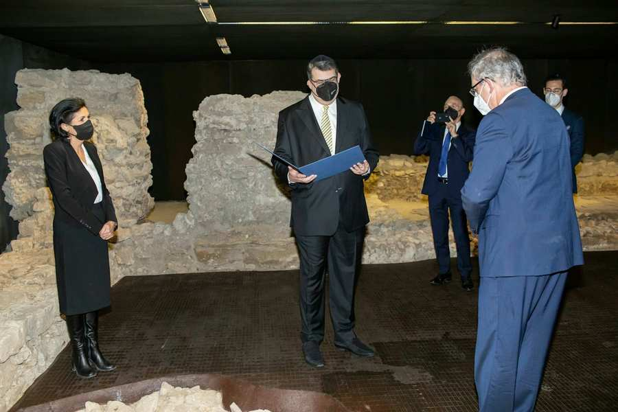
The role of the university in those events 600 years ago had been less to play an active part in the violence and expulsions but rather to legitimise them, maintained the representative of the University of Vienna. Shortly before the start of the pogrom, the Theological Faculty of the University of Vienna had compared Jews with heretics, he said. This was not the only pretext that was used to justify the pogrom, but, backed up as it was by the authority of scholars, it carried especial weight. “Because of this sense of shared responsibility, we continue to be committed to encouraging theologians to engage with Judaism, and to supporting active cooperation with the Jewish community,” said the Dean of the Faculty of Catholic Theology, Johann Pock: “Theological doctrine can never justify the destruction of human life.”
The less than glorious role played by the Catholic Church in these pogroms is still recorded on Judenplatz. If you look closely at the façades of the surrounding houses, you will see, mounted quite high up on the front of no. 2 Judenplatz – the so-called Jordan House – a plaque. It says in Latin: “Through the waters of the Jordan, bodies are purified of filth and evil. Everything that is hidden and sinful drains away. So arose in 1421 the flame of hatred, which raged through the whole town and expiated the terrible crimes of the Hebrew dogs. As the world was once purified by the Flood, so now are all sentences served after the raging of the fire.” And no, unfortunately there is nothing to say how badly treated the Jewish community was in the Middle Ages. Instead, the (alleged) crimes of the “Hebrew dogs” are denounced.
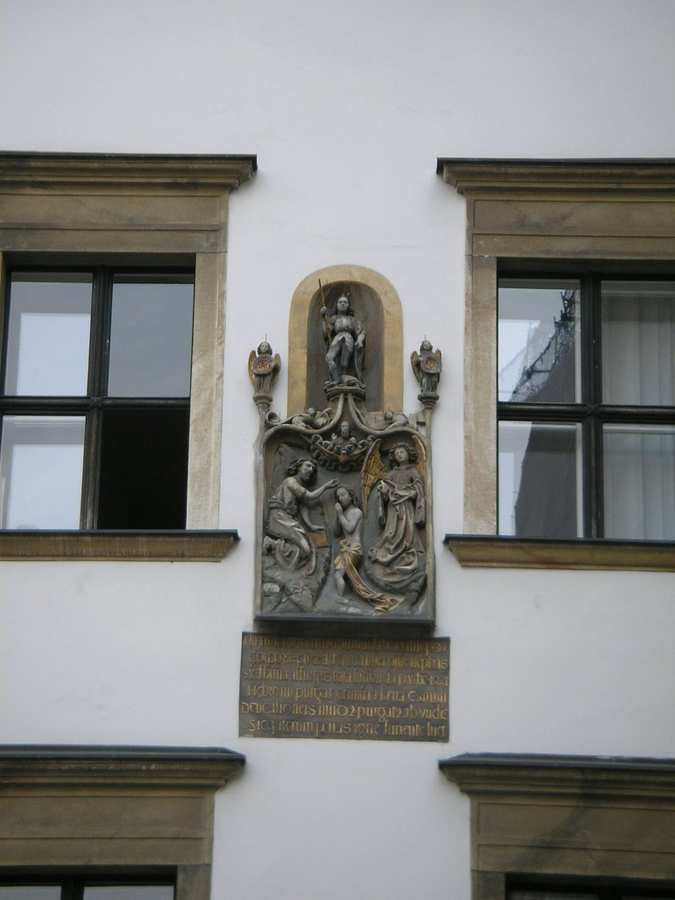
It would take centuries before, long after the Shoah, a church dignitary would finally find the right words to utter here. At no. 6 Judenplatz, there is now another plaque. It was installed in 1998 on the initiative of Cardinal Christoph Schönborn – and this time at eye level. “‘Kiddush HaShem’ means ‘sanctification of God’. It was in full awareness of this that Viennese Jews at the time of the persecution in 1420/21, here in the synagogue on the Judenplatz – the centre of a significant Jewish community – chose suicide in order to avoid the forced baptism that they feared. Others, about 200 of them, were burnt alive at the stake in Erdberg. Christian preachers at this time were spreading superstitious anti-Jewish ideas and stirring up hatred against the Jews and their faith. Under their influence, Christians in Vienna accepted it all without resistance, approved of it and became perpetrators themselves. In that sense, the destruction of the Jewish area of Vienna in 1421 was an ominous portent of what would happen in our own century during the National-Socialist tyranny. Popes in the Middle Ages spoke out in vain against antisemitic superstition, just as some religious believers fought in vain against the racist hatred of the Nazis. But there were too few of them. Nowadays, the Christian world regrets its complicity in the persecution of the Jews and acknowledges its failures. Today, for Christians, ‘sanctification of God’ can only mean: begging for forgiveness and hoping for God’s mercy.”
For two centuries after this expulsion and murdering of the Jewish community in the Middle Ages, Jews were banned from settling in Vienna, but there were several exceptional cases where permission was granted and a few families were able to settle here. From 1582, a cemetery was created for them, in Rossau (now called the Seegasse). At present, it forms part of the garden of a retirement home and is currently gradually being restored and rebuilt, one gravestone at a time.
During the Nazi terror, the gravestones of the Jewish community were taken to the Vienna Central Cemetery and buried there, to protect them from destruction by the Nazis. They were not rediscovered until 1982 and are currently being replaced in their original positions, stone by stone. The restoration of Jewish cemeteries across Austria only came about on the basis of the Washington Agreement of 2001. The then President of the IKG, Ariel Muzicant, insisted, during the negotiations which ultimately led to the setting up of the General Settlement Fund, that a solution for the derelict Jewish cemeteries must also be found. Now, gradually, one cemetery site after another across the country is being restored. In Vienna, as well as the one in the Seegasse, the Währing cemetery and the one at Gate 1 of the Vienna Central Cemetery are treasures of cultural history.
Let’s go back in history again. The general ban on Jews settling was only lifted in 1624 – now that Frederick II was in power, he granted another “Jews’ Privilege”. A new Jewish community became established in Unterer Werd, part of what is now the district of Leopoldstadt, often also called Mazzesinsel (“Matzo Island”). However, it would not last long. In 1670 Leopold I had the Jews expelled again. Furthermore, he ordered that, on the spot where until then a synagogue had stood, a church should be built. That church still stands today – the Leopoldskirche. “Emperor Leopold I had the Jews of Vienna expelled in 1670 and a parish church was built here in place of the synagogue,” reads a plaque on the church today.
When were Jews welcome in the city again? When money was needed. When the Turkish wars had emptied the coffers, money-lenders were called for. Samuel Oppenheimer was the first to come to Vienna, and he bought the Seegasse cemetery in 1686 and brought it back into use. Around 1700 other wealthy families moved to Vienna, including the Wertheimers and the Schlesingers. They were regarded as so-called “court Jews” and always had to pay a high price for being allowed to stay: they contributed to the construction of the Karlskirche, the Court Library, but also Schönbrunn Palace. Oppenheimer had even virtually single-handedly financed the first phase of the War of the Spanish Succession. When he died in 1703, the state went bankrupt, with his loans, amounting to around six million guilders at 12 to 20 per cent interest, being by far the largest of the state’s debts. Austria released itself from these debts at a stroke: not only were they not repaid, but his descendants were declared insolvent. That plunged any money-lenders connected with Oppenheimer into a major crisis. His grave can be found in the Rossau cemetery.
The Oppenheimers, Wertheimers and Schlesingers were all Ashkenazi Jews. However, when peace was agreed with Turkey, dozens of Sephardic Jews also came to Vienna. In 1718 a Turkish mission was established and, in 1736, a Sephardic community association. This was to remain prohibited to Vienna’s Ashkenazi Jews for over 100 years more, even though increasing numbers of them settled here. They were banned from living in Christians’ houses and instead were allocated their own specific houses, such as the Grüner’sche and Seitter’sche Haus on the Bauernmarkt, the “Zum Küß’ den Pfennig” house in the Adlergasse and one house on the Kienmarkt. Anyone who broke these rules had to pay a heavy penalty. Around 1740, there were nearly 500 Jews living in Vienna who had been granted an appropriate privilege.
The Patent of Toleration issued by Emperor Joseph II
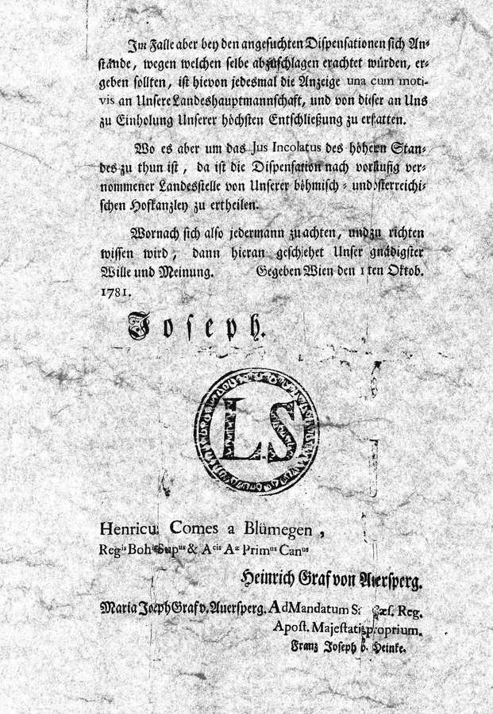
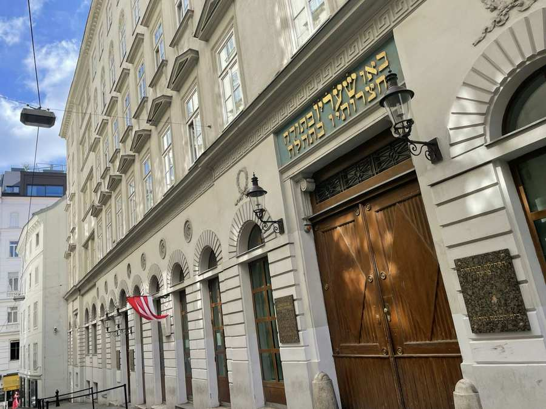
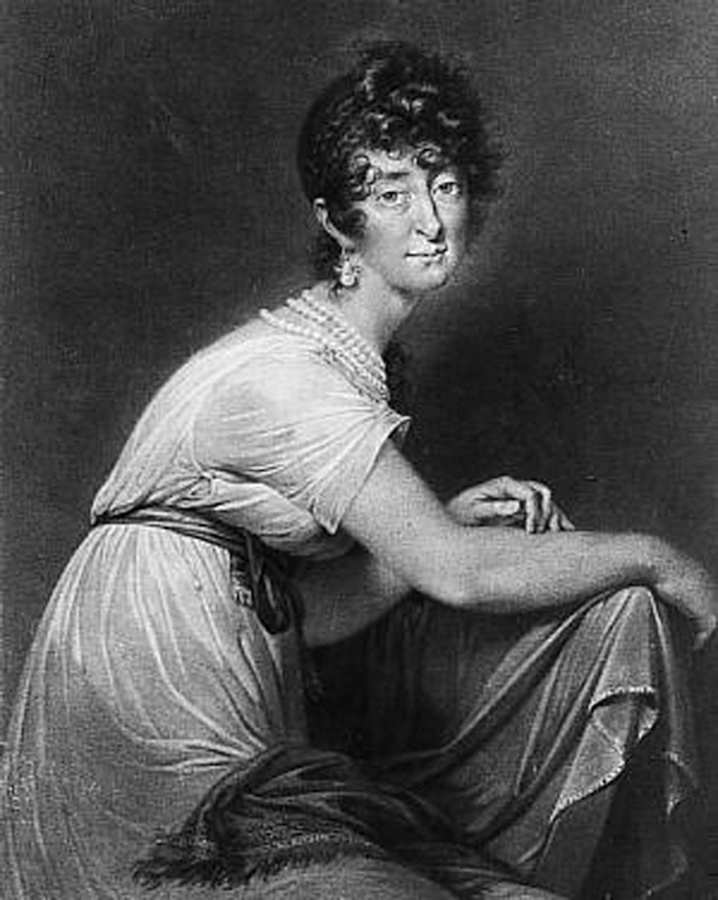
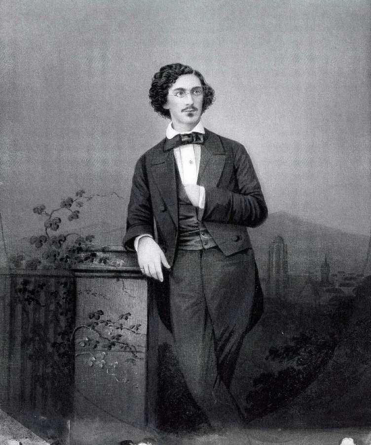
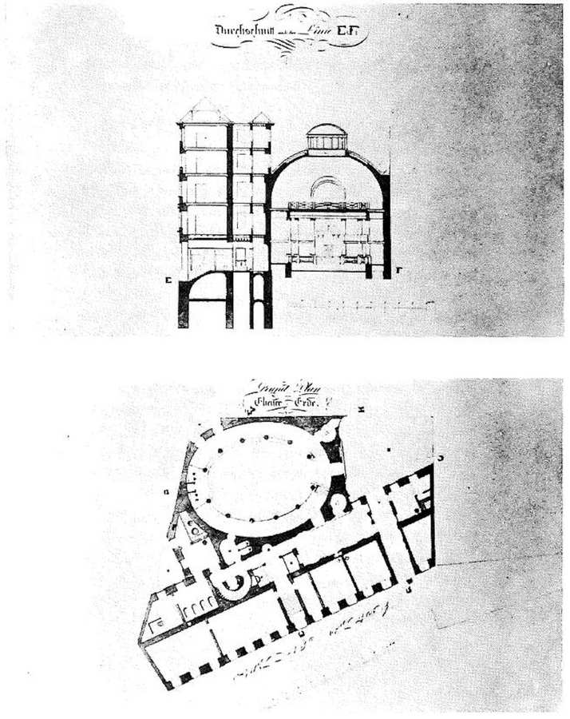
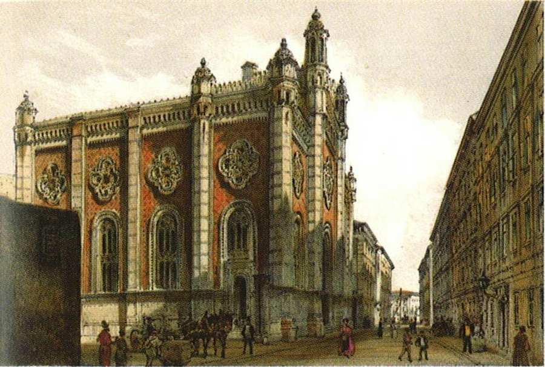
The 1770s brought something of an upturn. While Maria Theresa’s rules for Jews were notable for their restrictions, her son Joseph II strove for greater tolerance. The Patent of Toleration did away with discriminatory conditions such as the Leibmaut body tax, and the range of permissible occupations became broader. “Jewish houses” also became a thing of the past. Nevertheless, Rabbinic Judaism still faced considerable mistrust. Children had to attend a German-speaking and therefore Christian school. “Less Yiddish and more German” was the motto. It continued to be prohibited to establish a Jewish community association. In 1792, supervision of the Jews passed to a Jewish Office that became subordinate to the Police Chief Directorate in 1797. The Institute of Representatives of Viennese Judaism was also created at this time.
And then – in 1812 – the Seitenstettengasse finally reappears in the history of Vienna’s Jewish community. In the place where there is evidence of the city’s first synagogue in 1204 and which is now the heart of the community – with the City Temple, the Community Centre, the Archive and the community administration building – at the start of the 19th century Emperor Franz I authorised the opening of a school and a house of prayer. Fanny von Arnstein, who had married the banker Nathan Adam von Arnstein in 1776 and moved to Vienna, had already been holding a salon there in the Berlin style for many years. At the time of the Congress of Vienna, it would become a centre of social life. The salon was on the bel-étage of a palace on Hoher Markt, which she had rented, as Jews were still not allowed to own property. The story goes that it was in these rooms in 1814 that she erected the first Christmas tree in Vienna, thereby bringing a Protestant custom from North Germany to Vienna.
By now, certain Jewish families had risen to join the nobility, something that had been possible since 1783. How could that be? Well, the Napoleonic Wars had to be financed, and who do you call if you need money? Exactly. However, the by now much stronger and financially powerful Jews in Vienna had a request: the construction of a prestigious synagogue building. The prayer room at “Zum Weißen Stern” in the Sterngasse that they had been using until now was underground, damp and dark and they wanted something more appropriate to their status. A collection was made among Vienna’s Jews and an existing building was acquired: the Pempflingerhof in the Seitenstettengasse. It was converted and finally in 1812 a school, a prayer house and a mikveh opened.
The new premises were better than the prayer room in the Sterngasse, but not yet prestigious enough. All efforts to build a new synagogue in a different place were dismissed by the authorities. So the community used the argument that the Pempflingerhof was too dilapidated. Finally, in 1823, the municipal authorities gave permission for a new building in the Seitenstettengasse. So it was that the City Temple was built, based on plans by Josef Kornhäusel, and consecrated in April 1826. Isaak Noa Mannheimer was brought to Vienna as a religious instructor and preacher and Salomon Sulzer was appointed Cantor. Together they developed the “Viennese Rite”, a compromise between orthodox and reformed rituals. This subsequently spread through Jewish communities in Austria, Hungary, Bohemia and even parts of Germany. At the same time, preaching in German began to take hold.
There may not yet have been an official Jewish community association, but the unofficial one had a leader: Isaak Löw Hofmann. He invited Lazar Horowitz, who was a student of Chatam Sofer, one of the leading orthodox rabbis of his time, to come to Vienna as Chief Rabbi. However, since there was still no official recognition of the community, at first he had to hold the post of supervisor of rituals. While he busied himself with kashrut laws and strict observance of the halakha, he was also trying to find a balance between rival groups within the existing but not yet recognised community: while some insisted on the traditions, others demanded reform. This is why the “Viennese Rite” offered the necessary compromise.
Reform was in the air generally, and also a whiff of revolution. On 13 March 1848, the Jewish doctor Adolf Fischhof stood in front of the Landhof in the Herrengasse and formulated the key demands of the revolution, including freedom of religion, the press, learning and teaching. Of course, these battles were not all fought and won immediately. Restrictions on Jews remained until 1867, but in 1852 the establishment of a Jewish community association was finally permitted. The Jewish Community of Vienna (IKG Wien) has been in existence ever since.
This brought Jewish migrants from Hungary and Bohemia and better economic, cultural and social prospects for many Jewish families. They continued to engage in banking activities and government securities business but also became involved in the railways, built up industrial companies and took over the art and culture market. The textile trade was of particular significance when it came to social advancement. Jews in Vienna now played an important role as patrons of the arts and sponsors of social institutions; they became scientists, doctors, lawyers and economists. They flirted with the liberal ideas of the day while remaining loyal to the House of Habsburg.
More and more Jews moved from eastern parts of the empire to Vienna, many of whom were neither rich nor highly educated. They worked as labourers, tradesmen or pedlars, often living precarious lives and struggling to feed their children. The now growing community needed more infrastructure. Synagogues, prayer houses and prayer rooms appeared in many parts of Vienna, some on a huge scale like the Leopoldstadt temple in Tempelgasse that opened in 1858, others small and unassuming. A strong social network also emerged, with multiple associations to support those families who had to fight for survival every day.
The public authorities wanted to have a single point of contact rather than lots of smaller Jewish associations. That was why, in 1890, the principle of the unitary community became enshrined in law, in the Israelitengesetz (Jewish Law). Since then, the determining factor for membership of a particular religious community has been a person’s place of residence. A system of categorising people by district was introduced – that was where you belonged, and that was where births, marriages and deaths would be recorded in the registers.
Until 1938, this data was not recorded by the state authorities but by the legally recognised religious communities (civil marriage was only possible for people of no religious faith, and for Muslims). At the same time, the Israelitengesetz helped Jewish community associations to secure their financial basis, because they were now able to collect mandatory subscriptions from their members.
In 2012, the Israelitengesetz was comprehensively reformed and effectively rewritten. 36 paragraphs were condensed into 25, but a great deal was set down which is important to Jews and should not be left to interpretation by whoever happens to be in power at the time. This includes the fact that it is now enshrined in law that Jewish cemeteries are permanent and the graves must not be left derelict. The law now recognises the Jewish feast days of Rosh HaShanah (Jewish New Year), Yom Kippur (Day of Atonement), Sukkot (Feast of Tabernacles), Shemini Atzeret (end of Tabernacles), Simchat Torah (Rejoicing in the Torah), Passover (commemorating the escape from Egypt) and Shavuot (Feast of Weeks, celebrated 50 days after Passover). Specifically, this means that schoolchildren can go to the synagogue on those days and workers can request time off for the feast days, time which must be granted if it is requested.
Now enshrined as rights under the new Israelitengesetz are the brit milah, the operation of mikveh baths and the production of kosher foods. The law also states that the governing bodies of religious societies must be elected according to a process that has been clearly defined in advance (bylaws that every religious community must have). At the heart of the new law, in addition to the enshrined rights is the autonomy which is guaranteed to the Israeli religious society. The text of the law states that: “The Israeli religious society determines and administers its internal affairs independently. It has freedom of confession and education and the right to practise its religion in public.”
Antisemitism in the 19th century
The IKG has not always faced such a benevolent state. The lessons of the Shoah have now been learnt, the role of victim has been shed and the current government led by Federal Chancellor Karl Nehammer is working hard to combat antisemitism. In Vienna at the end of the 19th century, antisemitism had a massive impact on Jews. Religious, economic, social and finally also racist arguments for it were put forward: Karl Lueger, who was actually the city’s mayor from 1987 until 1910, was one of the political firebrands, Georg von Schönerer another. It was in this atmosphere that Theodor Herzl formulated his famous words: “If you will it, it is no dream.” In 1896, he laid the foundations for political Zionism with his book, “The Jewish State”.
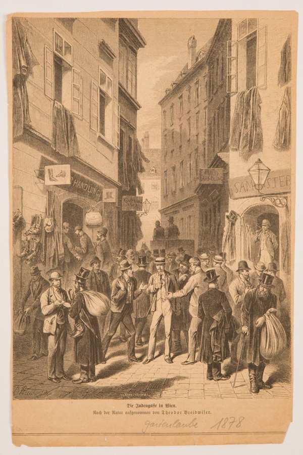
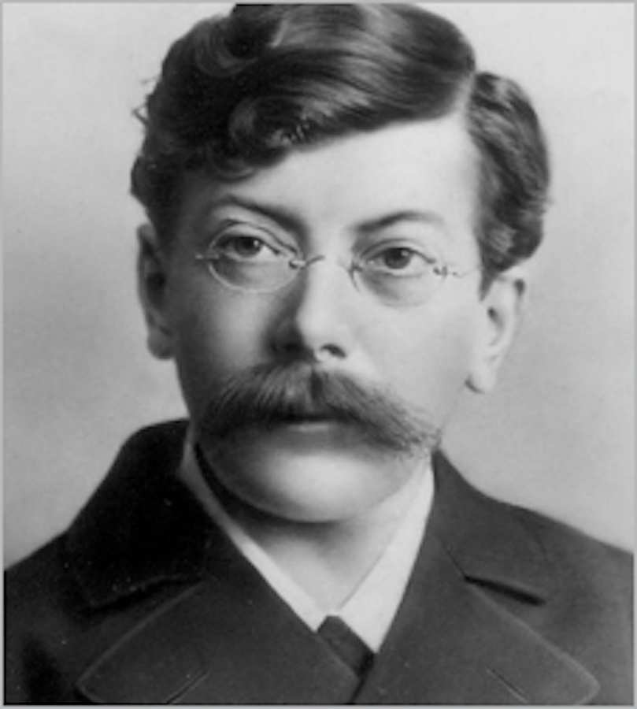
Just before the First World War, there were nearly 180,000 Jews living in Vienna. Some of them fought in the imperial army and could not understand what the world had become when, in 1938, despite being war veterans, they were no longer accorded any respect or recognition. Most of them were only able to fight in the Second World War if they had succeeded in escaping and managed to join the Allied armed forces. However, the First World War also led to refugee movements and, from 1914 onwards, growing numbers of Jewish refugees escaping the war arrived in Vienna from the historical region of Galicia.
The end of the First World War also brought about the end of the monarchy. This was the heyday of “Red Vienna”.One of its trailblazers was the Jewish doctor Viktor Adler, who repeatedly highlighted the miserable living and working conditions of the proletariat. He died just one day before the proclamation of the Republic on 11 November 1918. Other Jews also played a prominent role in “Red Vienna”: Julius Tandler, Hugo Breitner and Robert Danneberg were among them. The Chief Rabbi of the Jewish community in Vienna was now Zwi Perez Chajes. He was a committed Zionist and founded the Jewish grammar school. The school was closed down by the Nazis and only rebuilt decades later. Today, the Zwi Perez Chajes School offers a Jewish education from kindergarten age to the Matura (university entrance qualification).
Yet the demon of antisemitism still could not be eradicated. The more successful were Jewish scientists, artists and doctors, the stronger became the envy and the antisemitic propaganda. From 1929 onwards, the global economic crisis brought even more unemployment, poverty and great suffering. In such situations, people tend to look for a scapegoat. As so often in history, it was once again the Jews who were forced into this role.
The Nazi terror and “Race Laws”
By 1934, “Red Vienna” was over and Austrian fascism had arrived. A look towards Germany gave the more politically far-sighted a foretaste, even in 1933, of what the National Socialists had in store for Jews. By 1938, the time had come for Austria, too. In March 1938, Adolf Hitler’s troops marched into Austria – and were widely welcomed. The images of the Heldenplatz are burnt into the collective memory here, as are the ones of Jews scrubbing the pavement. The sculptor Alfred Hrdlicka has created a memorial to this latter event, which can be seen opposite the Albertina Art Museum. But such humiliations were only the start of the horror.
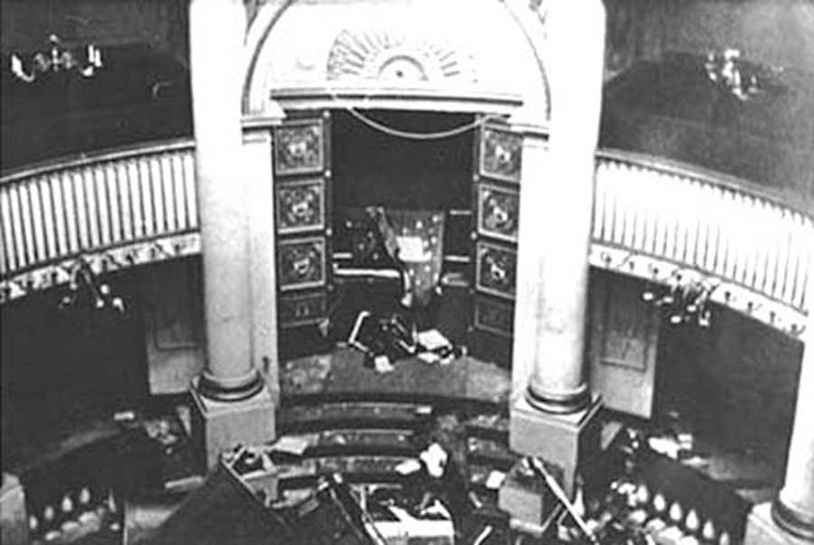
In the night from 9 to 10 November 1938, synagogues and prayer houses and shops belonging to Jews were plundered, daubed with graffiti and destroyed. Only the City Temple survives to this day after that “November pogrom”. Jews were gradually excluded from public life, they lost their jobs and were no longer allowed to study at university or go to school. They were forced to emigrate and their assets were confiscated.
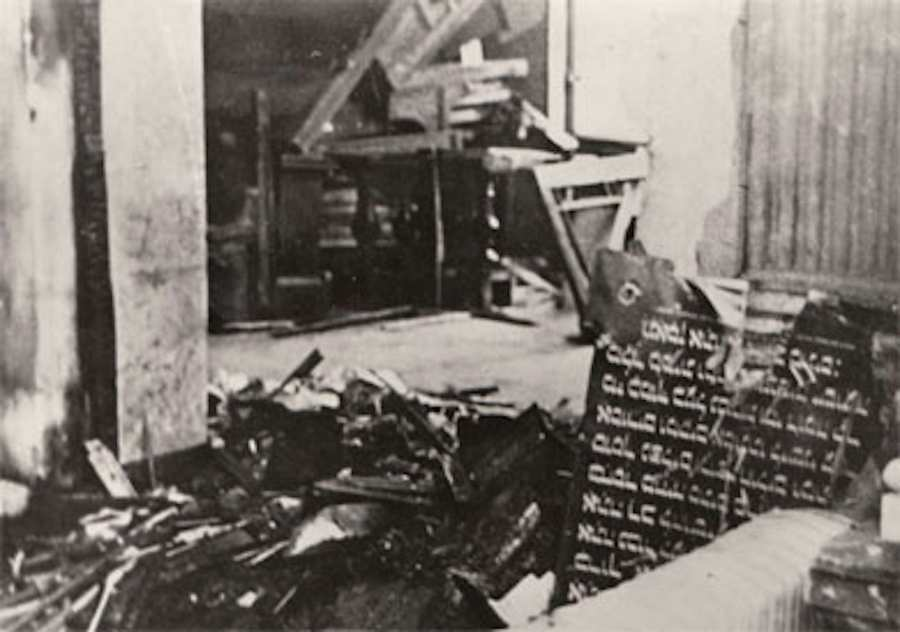
By May 1939, about 130,000 people, some of whom were members of IKG Wien but also others who had been classified as Jewish under the Nuremberg Race Laws, had left the country. In 1938, 206,000 people in Vienna counted as Jewish under those laws and 181,000 of them were members of the IKG. Tens of thousands did not manage to escape: they were deported to concentration camps or places of extermination in the east. These transports, and the systematic confiscation of property, had not only been meticulously planned; they were in fact tried out in Vienna first, before being implemented across the whole of the so-called German Reich. One key location was Aspang railway station, from where trains carried a thousand people at a time, mostly in cattle trucks, to their probable deaths. The station no longer exists, but there is now a memorial as a reminder of the train tracks and of this place of horror. More than 66,000 Austrian Jews were murdered by the National Socialists. They are remembered on the recently erected Shoah Wall of Names in Vienna. They are just some of the six million Jews who were killed because of the Nazis’ racial fanaticism.
During the Nazi era in Vienna, community leaders were forced to help organise first the emigrations and confiscation of property and, later, the deportations. In summer 1938, the Central Office for Jewish Emigration was set up. It was led by Benjamin Murmelstein, already before a member of the Board of IKG Wien. In 1941 and 1942, his role was to deport the Jews who remained in the city. The transports went initially to Theresienstadt and Lodz, and later mainly to Maly Trostenets in Belorussia. At the end of October 1942, IKG Wien was wound up and a council of Jewish elders was set up in Vienna. Its chairman was Josef Löwenherz. Shortly afterwards, at the start of 1943, Murmelstein was deported to Theresienstadt and became the “Jewish elder” there.
About 5,800 Jews survived the Nazi period in Vienna, most of them protected by being in mixed marriages. A further 1,000 Jews were able to escape deportation and death by living in hiding in Vienna as illegal U-Boote(submarines). IKG Wien re-established itself after the end of the war but neither the federal government nor the city authorities made any effort to bring Jews who had been expelled back to Vienna. For decades, Austria was presented as Hitler’s first victim.
In 1945, after the liberation of Austria, Löwenherz was initially entrusted with provisional leadership of the Jewish community which needed to be rebuilt, and although he was subsequently accused of collaboration and arrested, he was quickly released again. From June to September 1945, the physician Heinrich Schur, who had survived the Nazi period in Vienna thanks to being protected by his marriage to a non-Jew and who had worked as a doctor in the Jewish hospital in the Malzgasse, was appointed leader of the IKG. In September, David Brill took over as provisional head of the IKG. He was the editor of the Rote Fahne (Red Flag), the party newspaper of the Austrian Communist Party (KPÖ ) and secretary to the Communist Party Chairman and Secretary of State Johann Koplenig. Immediately after the war, Communists were strongly represented in the IKG: the KPÖ was the only party calling for Jews to return.
In April 1946, the first community elections since the end of the war were held and Brill’s unity list won 33 of the then 36 mandates (there are now 24 seats on the Board). The list broke down in 1948, with the formation of the Communist “Jewish Unity” group, the “Union of Working Jews” led by Jakob Bindel and one list for various Zionist groupings. From 1952 for the next three decades – until 1982 – the President of the IKG came from the “Union of Working Jews”: first of all Emil Maurer held the post, then Ernst Feldsberg and finally Anton Pick, all of them lawyers. These decades saw the appointment of Akiba Eisenberg as Chief Rabbi in 1948, the founding of the Federation of Jewish Communities in Austria in 1952, the opening of the Documentation Centre by Nazi-hunter Simon Wiesenthal in 1961, the establishment of the retirement home in the Bauernfeldgasse (1969-1972), and the founding of the Jewish Welcome Service by Leon Zelman (1978).
On the political front, the feud between the then Federal Chancellor Bruno Kreisky and Wiesenthal caused a stir in the mid-1970s: it concerned Friedrich Peter, who had been in an SS infantry brigade during the Nazi period and had now become Vice-Chancellor in a coalition between the SPÖ (Socialist Democratic Party of Austria) and the FPÖ (Freedom Party of Austria). Kreisky supported Peter, saying he believed him when he said he was not guilty of any Nazi war crimes. Kreisky himself, as a Jew, had had to flee Austria but now he accused Wiesenthal of having been a Nazi collaborator and Gestapo informer. Wiesenthal sued, Kreisky withdrew his statement but repeated it in the 1980s, Wiesenthal sued again and Kreisky was ultimately sentenced to pay a fine of 270,000 Austrian Schillings for defamation.
Meanwhile, the make-up of Vienna’s Jewish community was gradually changing: few Viennese families had returned after 1945, but instead Jews from Poland, Hungary and the then Czechoslovakia found a new home in Vienna in the post-war years. Some of them had initially, after the end of the war, lived in camps for displaced persons (DP), others fled in the wake of subsequent political upheaval, such as the Hungarian Uprising in 1956. In the mid-70s, a new phase of immigration began: now it was mainly Jews from the former Soviet Union who came to Austria. They came from Tajikistan, Georgia and the Caucasus and had often first emigrated to Israel via Austria, but then after a few years they returned to Vienna and settled here. So now, following the Turkish-Jewish community which had built a large synagogue in Oriental style in the Zirkusgasse in the 1880s, a new Sephardic community grew up.
Even though, in the immediate post-war period, many Jews mentally still had their cases packed, i.e. they weren’t sure whether they wanted to stay in Vienna, during the 1970s the idea gradually took root among some community leaders that they had indeed come to stay and so they must ensure that the appropriate infrastructure was in place. In 1976, a Jewish kindergarten opened in the Grünentorgasse, and in 1978, on Thomas Moskovic’s initiative, 30 families joined together and agreed to set up a Jewish primary school, which opened in the Seitenstettengasse in 1980. The year before, a community centre had opened next to the City Temple, which this is still used as a venue for events and celebrations to this day. After the terror attacks on the City Temple in 1979 and 1981, security at the IKG was bolstered and a professional service is still provided today at all IKG institutions to protect community members.
The 1980s brought a new Chief Rabbi, whose humour and singing is still respected far beyond the Jewish community to this day: Paul Chaim Eisenberg followed his father Akiba. In 1984 the Jewish school in the Castellezgasse opened, now taking pupils through to the Matura (university entrance qualification). Then the administrative centre moved to the Seitenstettengasse. In community politics, the election was won by the “Alternative” (a joint list of several groupings) and the “Young Generation”. Ivan Hacker became IKG President and held this function until 1987. On the Austrian political front, the “Waldheim years” began. Kurt Waldheim, who had previously been Secretary General of the United Nations for nine years, was elected Austrian President in 1986. During the election campaign, his alleged involvement in war crimes during the Nazi period became public; until then he had always omitted his time as a Wehrmacht officer from 1942 to 1944 from his biography. This affair finally began a process of reappraisal of the Nazi period by Austrians. In 1995, the National Fund of the Republic of Austria for Victims of National Socialism was set up, and in 1996 the “Mauerbach Auction” took place, at which artworks and objects that had been restored to the IKG the year before were auctioned off, with the proceeds going to victims of the Holocaust.
However, the big compensation package – including the compensation fund, payments in lieu of tenancy rights and the option of applying for the restitution of property now in public ownership – was only finalised in 2001 with the Washington Agreement. The driving force here was IKG President Ariel Muzicant from the Atid list, who led the Jewish community in Vienna from 1998 until 2012 and is still the Honorary President today. His predecessor Paul Grosz (IKG President from 1987 to 1998) had already pushed ahead with improving infrastructure for the Jews; it was during his term of office that the retirement home was modernised and in 1992 the Sephardic Centre in the Tempelgasse was built. In 1994 the psychosocial centre ESRA opened its doors, followed in 1998 by the Jewish Vocational Training Centre JBBZ.
Muzicant was the first IKG President to be born after the Nazi era. One year after taking office, he was confronted on the national political stage with the first ÖVP-FPÖ cabinet, then still with Jörg Haider pulling the strings of the FPÖ (Freedom Party of Austria). The decision was made then to have no contact with members of the government from the FPÖ – and the IKG stuck to this with all subsequent governments in which the Freedom Party participated. In the political arena, there were negotiations during Muzicant’s term of office about compensation for confiscated property and also the renovation of Jewish cemeteries (the Cemetery Restoration Fund was set up in 2010). The community’s own infrastructure was further expanded at this time, as well. The IKG Campus in the Prater was created which today is home to the ZPC School, the Maimonides Zentrum retirement home and the Hakoah Sports Club. The setting up of the IKG archive was also initiated by Muzicant.
In 2012, Oskar Deutsch, also a representative of the Atid fraction, took over the Presidency. He had already been responsible in 2011 for the staging of the European Maccabiah Games in Vienna. One of his concerns is to open up the community to the non-Jewish majority population, and on the political stage he is also very active in the fight against antisemitism and in safeguarding Jewish life in Vienna.
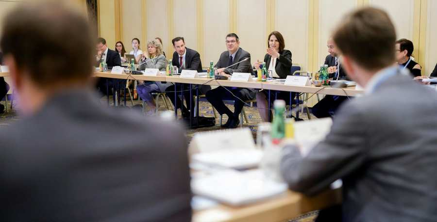
In early 2021, while Sebastian Kurz was still Federal Chancellor, the government launched a National Strategy against Antisemitism which is now being implemented under the leadership of the Minister for the Constitution, Karoline Edtstadler. At its heart is an agreement between the government and the Israeli religious community that led to the passing of the Austrian-Jewish Cultural Heritage Act. The purpose of this is to safeguard Jewish life. To this end, annual sums amounting to four million euros are made available to the Jewish Community which can be used both for security and for other projects. It has also been during Deutsch’s time in office so far that a legal way has been found to allow the descendants of Shoah survivors to obtain Austrian citizenship.
There has also been a process of reform and democratisation in recent years in relation to the still orthodox rituals that are followed at the City Temple. For example, women are now also allowed to stand for election to the Temple Board. The current Chief Rabbi is Jaron Engelmayer, who took over from Arie Folger in 2020, who in his turn had taken over in this position from Paul Chaim Eisenberg in 2016. Engelmayer is trying to involve girls even more than before, so there is now a Bar and Bat Mitzvah Club where boys and girls are prepared for their bar and bat mitzvah, respectively. Bat mitzvah parties at the Community Centre had become a regular event already in the preceding years.
Since 2020 the community leadership has been concerned with the continuing coronavirus crisis. IKG President Deutsch and the Board have tried, on the one hand, to provide financial support to community members who were struggling to survive due to the lockdowns by setting up un-bureaucratic aid funds and, on the other, to arrange for older and vulnerable community members, in particular, to be vaccinated quickly.
In addition, the IKG has been very active in helping Jewish refugees since the beginning of the war in Ukraine.
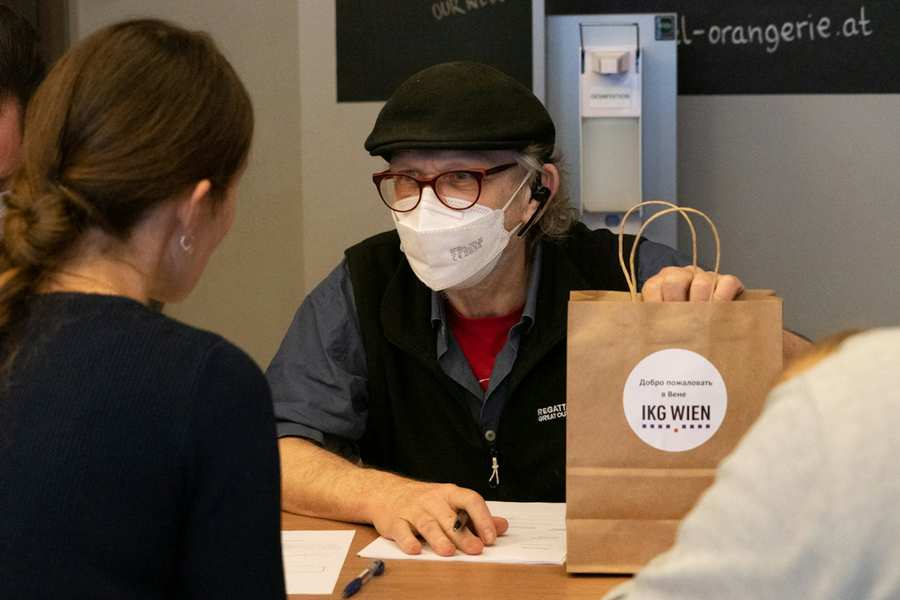
On November 17th, 22nd and 27th, 2022, all members of the Jewish Community of Vienna who were eligible to vote were called to vote for the cultural board. The voter turnout was over 60 percent. In January 2023, the presidium consisting of President Oskar Deutsch, Vice President Claudia Prutscher and Vice President Michael Galibov was elected by the Cultural Affairs Board.

In 2023, the course was set for a sustainable energy supply for the IKG Campus. Together with the Mayor of Vienna, Michael Ludwig, the solar system on the roof of the ZPC school was presented to the public. Over the next 20 years, the system will save 1,650 tons of CO₂.
In the same year, the climate within the community was also surveyed in a large annual survey. The survey of community members and friends of the religious community, carried out by renowned pollster Peter Hajek, shows great satisfaction with the religious community's services and a high sense of security among those surveyed. Of the over a thousand people who took part in the survey, 87% of those surveyed live in Vienna.
In 2023, the Austrian-Jewish Cultural Heritage Act was also evaluated and increased. The increase expresses the appreciation for the communities and at the same time is recognition for the work that the religious communities do.